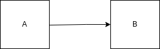
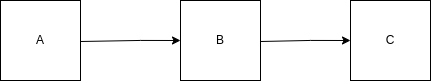
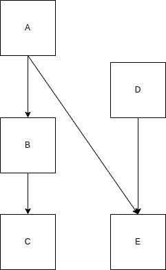

Outpack includes a query DSL (domain specific language), extending
the one used by orderly (see orderly::orderly_search()).
Queries are used in identifying ids to pull in as dependencies, so rather than providing an identifier, you might want to depend on
Not all of this is supported as of the current version of outpack, and using the queries seemlessly is also not supported!
The most simple query is
latest()which finds the most recent packet; this is unlikely to be very useful without scoping - see below.
More complex queries are expressed in a syntax that is valid R (this is also valid Julia and close to valid Python). A complex query is composed of “tests”
name == "some_name"
parameter:x > 1Every “test” uses a boolean operator (<,
>, <=, >=,
==, or !=) and the left and right hand side
can be one of:
parameter:x is the
value of a parameter called x, name is the
name of the packet, and id is the id of a packet)pars
(this:x is the value of pars$x)"some_name", 1, or
TRUE)Tests can be grouped together (, !,
&&, and || as you might expect:
parameter:x == 1 || parameter:x == 2 finds packets
where the parameter x was 1 or 2name == "data" && parameter:x > 3 finds
packets called “data” where parameter x is greater than
3(parameter:y == 2) && !(parameter:x == 1 || parameter:x == 2)
finds where parameter y is 2 and parameter x
is anything other than 1 or 2 (could also be written
(parameter:y == 2) && (parameter:x != 1 && parameter:x != 2))There are four other functions
latest(expr) finds the latest packet satifying
expr - it always returns a length 1 character, but this is
NA_character_ if no suitable packet is found. If no
expr is given then the latest of all packets is
returned.single(expr) is like latest(expr) except
that it is an error if expr does not evaluate to exactly
one packet idusedby(expr, FALSE) where expr is either a
literal id or an expression which returns 1
id. This finds all packets which were used in generation of
packet with id returned from expr (see
dependencies section for more details).There are two shorthand queries:
latest is equivalent to latest() (most
useful when applied with a scope)^([0-9]{8}-[0-9]{6}-[[:xdigit:]]{8})$) is equivalent to
single(id == "<id>") where "<id>"
is the string provided)Scoping queries can be used as a shorthand for filtering the returned
packets. In the future they could be used to reduce the set of packets
that are searched over to speed up query evaluation. They join together
with the main query as (scope) && (expr), except
when the expr is a call to latest or
single. In this case they combine as
latest((scope) && (expr)) or
single((scope) && (expr)). This is useful if you
want to limit the search to a particular name or location but perform
some more detailed search.
For example, the query
outpack_query(quote(parameter:x == 1), scope = quote(name == "data"))is equivalent to
outpack_query(quote(parameter:x == 1 && name == "data"))Orderly will use this functionality when resolving dependencies.
Very often users will want to scope by name so instead of passing
scope argument there is a shorthand name
argument for usability.
outpack_query(quote(parameter:x == 1), name = "data")Which is the equivalent of
outpack_query(quote(parameter:x == 1), scope = quote(name == "data"))If we have 2 packets, where B depends on output from A (i.e. we call
outpack_packet_use_dependency(id_a, ...) when running
packet B) we can draw this as.

We could equivalently say
With the tree of dependencies built by outpack we might want to
search for packets which have been used by another packet. We can use
the query function usedby(id) to list all packets which are
used by id. This will search recursively through all
packets used by id and its parents and its parents parents
and so on.
The optional second arg immedate is FALSE
by default, if set to TRUE then we search only for
immediate (e.g. level 1) dependencies.
Being able to search through dependencies like this means if we have some packet structure like

and we want to know the id of A which was
used by C we can find this using
outpack_search
outpack_search(quote(usedby(latest(name == "C"))), name = "A")usedby can be combined with groupings and scope:
outpack_search(quote(usedby(latest(name == "C")) && parameter:year == 2022),
scope = quote(name == "A"))The depth that usedby will recuse can be controlled by
setting the depth e.g.
outpack_search(quote(usedby(latest(name == "C"), depth = 1)), name = "A")will search for just immediate parents of C.
depth can be any positive integer, by default
depth will recurse until it finds all parents.
usedby can be simplified by using subqueries. Subqueries
are denoted by curly braces {} and can either be named and
passed in subquery arg or can be anonymous. The query below
is equivalent to the above but uses a subquery for C.
outpack_search(quote(usedby({C}) && parameter:year == 2022),
scope = quote(name == "A")
subquery = list(C = quote(latest(name == "C"))))There are two important things to note about usedby: *
The query inside usedby will search the entire index,
ignoring any scope or name parameters. This is
because we want to find all packets which are used by
latest C. If the subquery C was
scoped this would return no results. * The query inside
usedby must return a single result. To ensure this it must
either be a literal id, a call to latest or a
call to single
As well as searching up the dependency tree using usedby
we can search down with the uses function. In the same
setup above with reports A, B and
C if we want to know the id of C
which uses A we can find this by using
outpack_search(quote(uses(latest(name == "A"))),
scope = quote(name == "C"))uses and useby can be combined to search
more complex arrangements of dependencies. If we have something like

If we want to search for the version of E which depends
on the version of A which was used in the latest
C we can do this via
outpack_search(
quote(latest(uses(single(usedby(latest(name == "C")) && name == "A")))),
name = "E")This searches up the tree from C to A and
then down the tree to find the version of E. Note that is
is important we added the name == "A" condition here, if
that was missing usedby(latest(name == "C")) would also
return B and single would throw an error
because we have multiple packets.
We can also search up the tree and then down to find A
from D e.g.
outpack_query(
quote(usedby(single(uses(name == "D")))),
scope = quote(name == "A"),
root = root)note as E is the only packet which uses D
we do not need to add a name == "E" clause.
We can combine usedby and uses in more
complex searches, such as to find D from C we
could run
outpack_query(
quote(usedby(single(uses(single(usedby(latest(name == "C")) && name == "A"))) && name == "E"))),
scope = quote(name == "D"),
root = root)